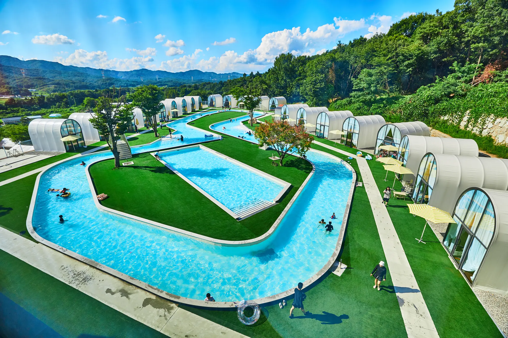

SCROLL
SCROLL
A DAY AT RE:LIM
물을 따라 걷고,
숲 가까이 머무는 시간
용인 리림의 하루는 수영장과 캠프닉, 바베큐를 각자의 방식으로 쉬고 즐기는 장면에서 시작됩니다.



About RE:LIM
용인에서 수영장과 바베큐를 함께 즐기는
프라이빗 캠프닉 공간입니다.
리림은 경기도 용인시 처인구 원삼면에 위치한 야외 복합 공간입니다. 용인 캠핑장이나 당일 글램핑을 찾는 가족과 친구가 수영장과 유수풀, 개별 쉘터, 바베큐 공간과 카페를 한곳에서 이용할 수 있으며 오전·오후 시간제로 운영됩니다.
용인 리림 소개 보기
Facilities
용인 리림 주요 시설 안내
용인 캠프닉과 물놀이를 함께 즐길 수 있는 수영장, 유수풀, 개별 쉘터와 바베큐 공간의 실제 모습을 예약 전 확인해 주세요.
Quick Guide
용인 리림 예약 전 확인해 주세요.
오전과 오후, 머물고 싶은 리림의 시간을 선택해 주세요.

YONGIN OUTDOOR GUIDE
용인 캠핑장·수영장·바베큐를
한곳에서 찾는다면
리림은 서울 근교에서 당일로 다녀오기 좋은 용인 원삼면의 캠프닉 공간입니다. 야외 수영장과 유수풀, 일행별 개별 쉘터, 바베큐 공간을 한 번의 예약으로 이용할 수 있습니다.
용인 수영장·유수풀 시설 보기
용인 리림 예약 방법 보기
용인 리림 위치·오시는 길 보기
요금·숙박·준비물 FAQ 보기
CAMFIT Reservation